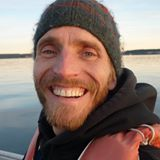
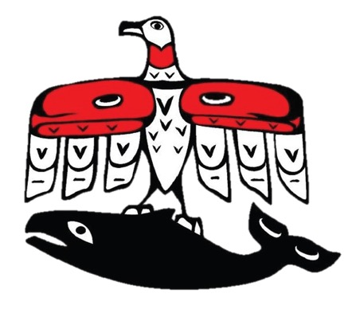

The Jamestown S’Klallam Tribe (Tribe) resides on the north Olympic Peninsula in Washington State. Many Jamestown S’Klallam Tribal citizens live in and around the Tribe’s ancestral watersheds, particularly Sequim and Dungeness Bays, which the Tribe has relied upon for cultural and natural resources. The mission of the Tribe’s Natural Resources Department is to protect treaty rights of the natural resources of the Point No Point Treaty area for the benefit of Jamestown S’Klallam Tribal members and future descendants. Within the Natural Resources Department, the Shellfish Program is primarily responsible for the harvest management of clams, oysters, geoduck, crab, and shrimp — and works cooperatively with the State of Washington to co-manage these resources. The program also conducts research, monitoring, biological assessments, and shellfish enhancement. Clams and oysters are harvested for commercial, ceremonial, and subsistence purposes. To ensure the shellfish is safe for consumption, samples are collected prior to harvest and sent to the Washington Department of Health where they are tested for Paralytic Shellfish Poisoning, Amnesiac Shellfish Poisoning, and Diarrhetic Shellfish Poisoning.
Neil Harrington, environmental biologist for the Jamestown S’Klallam Tribe, believes that SoundToxins is a good way to keep the Tribe closely connected with phytoplankton monitoring activities in Washington’s inland waters. It provides a “heads up” on locally-occurring algal bloom events that may ultimately impact critical shellfish resources, especially the geoduck and intertidal shellfish fisheries which periodically suffer closures due to shellfish toxins. On a summer day in 2011, a family camping at the Sequim Bay State Park became ill after eating mussels that they had picked at the park that day. Several days later, children from the Tribe’s summer youth program dug clams on the Tribe’s tidelands in south Sequim Bay. When it was determined, through SoundToxins and Department of Health monitoring, that the algae producing the toxin were Dinophysis and were present in large numbers on the day of the clam dig, the Tribal youth were instructed to return the clams. As disappointed as they were, they were happy to know that they wouldn’t get sick!
Neil Harrington
The Makah Tribe, traditionally called the qʷidiččaʔa·tx̌ or the Cape People, have inhabited the most northwestern region of Washington, in Neah Bay, since time immemorial. With the Pacific Ocean to the immediate west and the Strait of Juan de Fuca to the immediate north, the Makah have always been people of the water. Thus, it is of high priority for the Makah people to manage, enhance, and protect our tribal waters and fisheries both within the reservation’s boundaries and in Tribal Usual and Accustomed areas.
The Makah Water Quality (WQ) Program’s mission is to protect human and environmental health by researching and preserving water resources of the Makah Nation and future generations. To prevent illness caused by the consumption of toxic shellfish, weekly we monitor live algae samples and monthly, or bi-monthly, we test shellfish collected on the reservation. The Makah WQ Department works cooperatively with the Washington State Department of Health to test local shellfish and with our Olympic Region Harmful Algal Bloom partners to put together data that details algae type and amount of harmful algae currently in the water. The Makah WQ Department hopes that a partnership with the SoundToxins Project will aid in efforts to provide an early-warning system for harmful algal blooms to partners and other stakeholders.
Riley Smith and Courtney Winck
The Nisqually people have traditionally lived off the land and rivers, sustaining civilization through the respect and protection of our natural ecosystem. The tribe is entrepreneurial and has grown to become one of the largest employers in Thurston County, while building a national reputation for environmental stewardship programs protecting and enhancing our natural environment for decades.
The Nisqually Tribe Shellfish Farm is a 120-acre shellfish farm in Henderson inlet. Nisqually's Shellfish Program Manager Margaret Homerding conducts the SoundToxins monitoring at Zittel's Marina.
Margaret Homerding
The Port Gamble S’Klallam Tribe (PGST)’s Natural Resources Department is committed to sustainably manage, protect, enhance, conserve, and restore culturally relevant species, landscapes and seascapes integral to the unique identity of the S’Klallam People. The mission of the PGST is to exercise sovereignty and ensure self-determination and self-sufficiency through visionary leadership. We will ensure the health, welfare and economic success of a vibrant community through education, economic development, preservation and protection of the rich culture, traditions, language, homelands and natural resources that our Tribe depends on.
PGST’s Reservation is located on Port Gamble Bay, ancestral homeland of the Tribe. Port Gamble S'Klallam oral history indicates a deep historic connection to Port Gamble Bay. The S'Klallam name for Port Gamble Bay is nexʷq'iyt nəxʷq̕íyt meaning "place of the noon day sun" relating to the quality of light on Port Gamble Bay. Port Gamble S'Klallam people use Port Gamble Bay today much in the same way their ancestors did in the past. Tribal members harvest a range of resources from the marine waters of the bay. As in the past, these resources support subsistence, economic life, as well as rich cultural traditions.
Chris Jones a PGST tribal member, and Heather Gordon currently do the sampling for SoundToxins in Port Gamble Bay. The goal of the sampling is to find out more information about phytoplankton blooms and how this could potentially impact tribal members’ ability to practice their treaty right of harvesting shellfish in the bay.
Chris Jones and Heather Gordon
The Skokomish Tribe is devoted to promoting an independent sovereign nation that preserves traditional values and treaty rights of their Salishan ancestors. The Skokomish Natural Resources Department strives to protect habitat, monitor environmental health and water quality, and implement programs that enhance salmon-bearing streams and wetlands.
Naomi Estrada
The Stillaguamish Tribe is committed to serving their members, preserving their culture, and continuing the stewardship of their native lands. The mission of their Natural Resources Department is to manage, protect, and conserve those natural resources that are required to sustain healthy populations of fish, shellfish, and wildlife within the Stillaguamish Watershed.
The Stillaguamish Tribe of Indians resides by the Stillaguamish River with their headquarters located in Arlington. Their staff members, Franchesca Perez and Maggie Taylor, sample for SoundToxins at Port Susan within Kayak Point State Park.
Franchesca Perez and Maggie Taylor


The Squaxin Island Tribe have been the People of the Water for centuries. The Tribe’s Natural Resources department is committed to sustaining and enhancing tribal resources which includes water quality, fish, and shellfish as well as protecting, preserving, and restoring habitat. Shellfish are important for subsistence, economic, and ceremonial purposes, so monitoring for harmful plankton that these shellfish may consume. Candace Penn monitors water quality for SoundToxins at the mouth of Hammersley Inlet.
Candace Penn
The Salish word for Tulalip is dxʷlilap, which means "small-mouthed bay" and refers to the nearly landlocked nature of the cove. The tribe is committed to protecting its rich natural resources including marine waters, tidelands, fresh water creeks and lakes, wetlands, and forests. Max Lundquist, Kathy Stanley, and Mike McHugh sample for SoundToxins at the Head of Tulalip Bay.
Max Lundquist, Kathy Stanley, and Mike McHugh